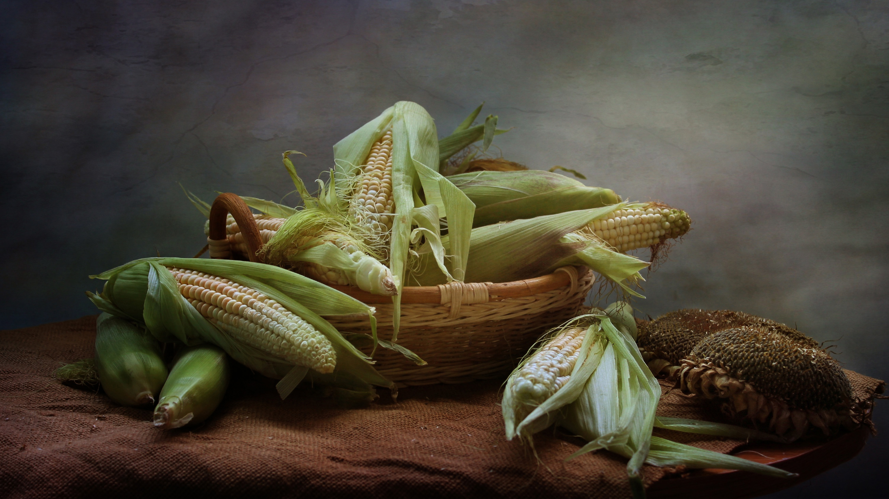
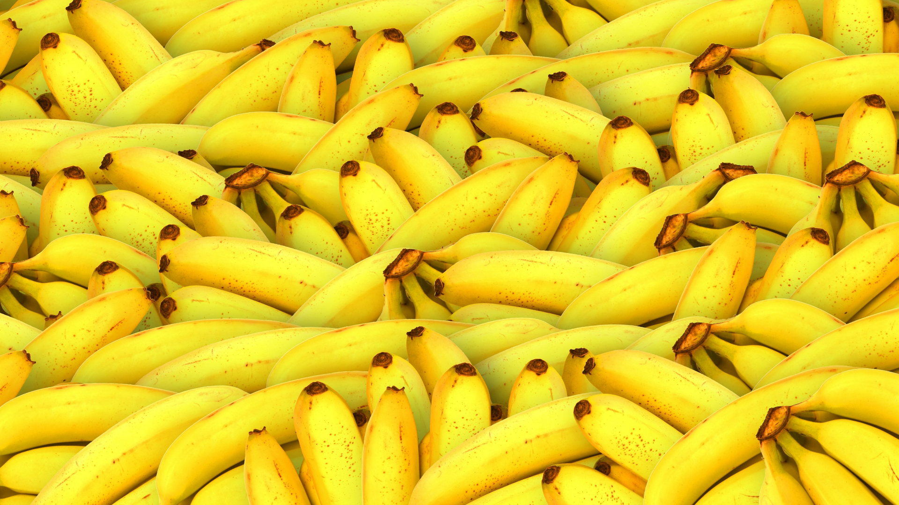
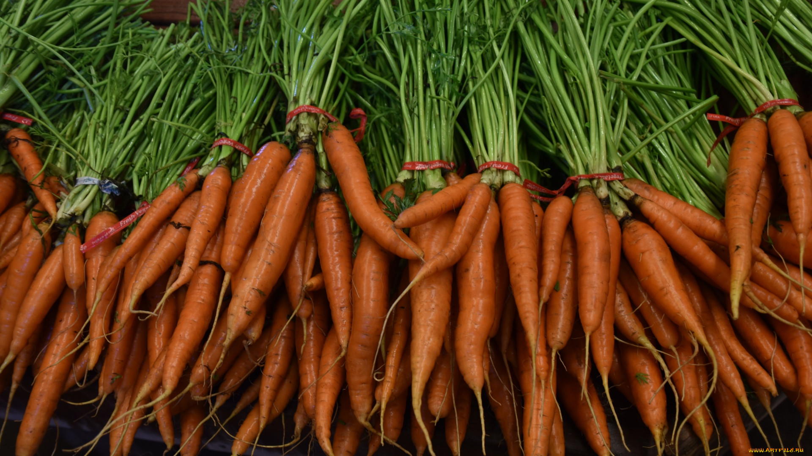

📰 Berita Terbaru AgriLens
Update informasi terbaru seputar pertanian, komoditas, teknologi, dan dunia agrikultur.

Pertanian
Produksi Padi Nasional 2025 Diprediksi Meningkat
Pemerintah optimistis peningkatan produktivitas lahan mampu menaikkan stok beras nasional...
21 November 2025
Baca Selengkapnya →

Teknologi
AI Membantu Petani Prediksi Hama Tanaman
Sistem AI mulai banyak digunakan untuk membaca pola cuaca dan potensi munculnya hama...
18 November 2025
Baca Selengkapnya →

Pertanian Organik
Pupuk Organik Kembali Jadi Tren di Kalangan Petani
Banyak petani mulai kembali menggunakan pupuk organik karena lebih ramah lingkungan...
14 November 2025
Baca Selengkapnya →